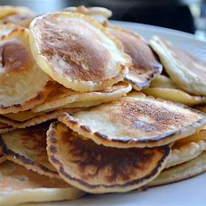

| Ingredients |
Amount |
| Flour |
200 g |
| Salt |
1/4 tsp |
| Milk |
550 ml |
| Eggs |
2 |
| Sugar |
50 g |
| Butter |
200 g |
- Vala jahu suurde kaussi, sega soolaga.
- Klopsi munad teises kausis lahti, lisa piim ja suhkur.
- Vala vedelad ained jahu hulka, samal ajal jahu segades.
- Kõige lõpus sega hulka sulatatud või
- Prae pannil
